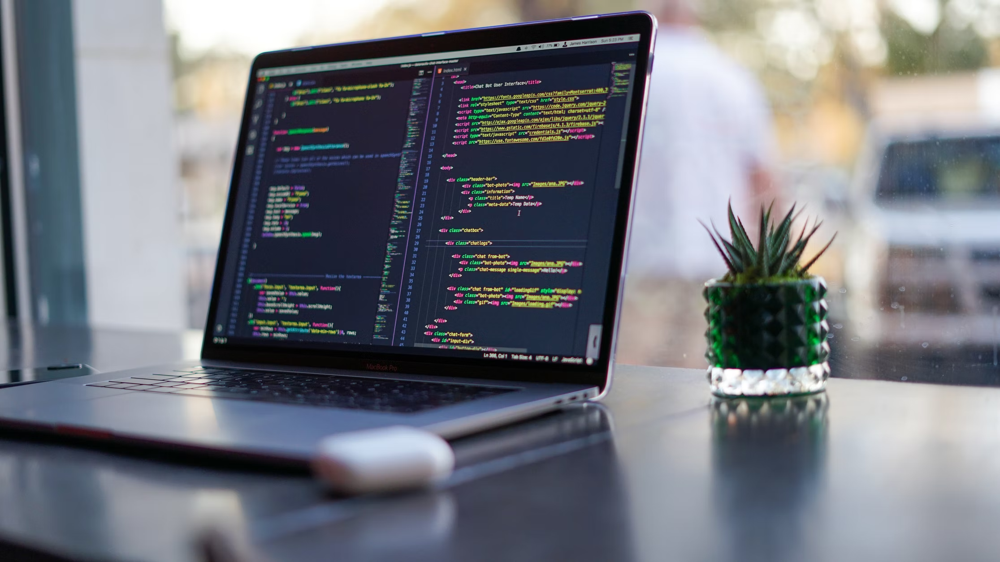

My new journey as a bootcamp student.
After several months of learning in the Frontend Developer Career Path, I've made the big jump over to the Bootcamp to get expert code reviews of my Solo Projects projects and meet like-minded peers.

How I stay committed to learning
I like to think I'm a lifelong learner. I used to spend hours in libraries reading everything I could about prehistoric civilizations, philosophy, and literature. Then I started working on my own and got to experience the joy of learning by doing. Coding is the perfect mix of both.
Learning to code has been one of the most rewarding challenges I've taken on. Every bug I fix and every project I finish makes me want to keep going.
How I got started
I started with the basics: HTML, CSS, and a little JavaScript. Building small projects every week kept me practicing, and sharing them with the community kept me accountable.
Moving into the Bootcamp means more structure, real code reviews, and peers to learn alongside. I'm excited to see where this journey takes me.